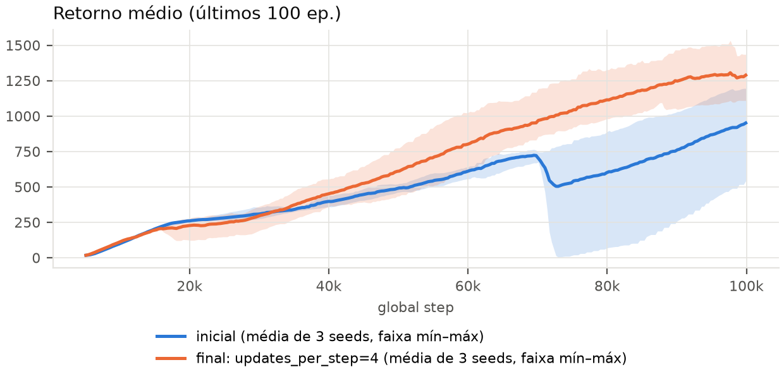
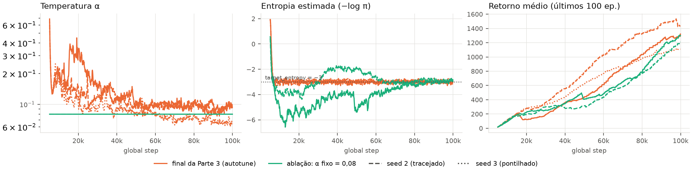
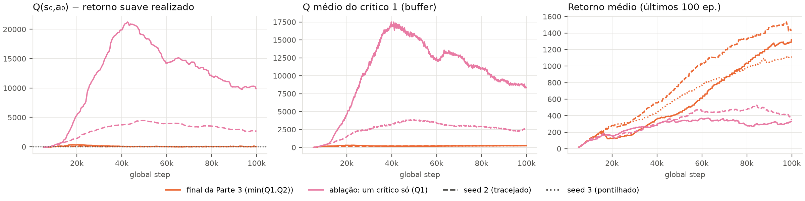
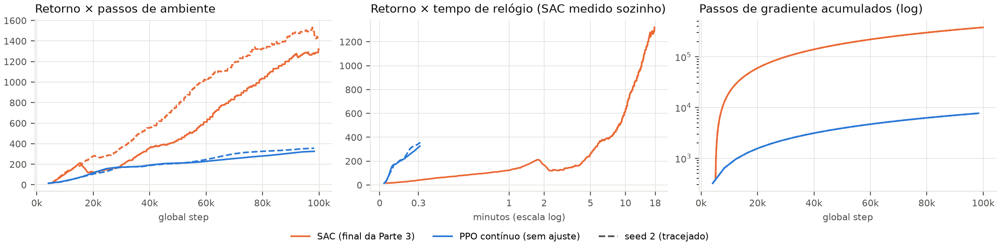

1. Política Estocástica com Reparametrização (sac.py:147): A amostragem de ações contínuas emprega o truque de reparametrização u = μ + σ·ε com ε ~ N(0, I) via Normal(mu, sigma).rsample(), assegurando que o gradiente da perda do ator retropropague analiticamente através da ação. A projeção não-linear a = tanh(u)·scale + bias mapeia para o suporte válido de atuadores, com correção jacobiana log π(a|s) = log p(u) − ∑ log(scale·(1 − tanh²u) + 10−6) acumulada sobre as 3 dimensões do Hopper.
2. Alvo de Bellman Regularizado por Entropia (sac.py:182): y = r + γ(1 − d)(min(Q′1, Q′2) − α log π(a′|s′)). A suíte de 16 testes unitários obteve 100% de aprovação e a checagem no Pendulum-v1 convergiu com eval de −142,1 (critério > −200).
Ambiente & Orçamento: Hopper-v5 sob orçamento estrito de 100.000 passos de ambiente, avaliado com 3 seeds independentes na Parte 3 e 2 seeds nas Partes 4 e 5. Todos os retornos reportados expressam média amostral e intervalo (mín–máx). As hipóteses das Partes 4 e 5 foram formalmente pré-registradas antes das execuções (report_sac/previsoes.md).
Correção no Harness: Identificou-se e corrigiu-se uma inconsistência sintática no script de registro de logs train.py original (referência a args.algo.learning_rate, parâmetro desacoplado no SAC em q_lr e policy_lr), sem qualquer modificação na lógica algorítmica.
Diagnóstico da Configuração Inicial. A análise das três sementes da configuração baseline (5qgrxbh1, y2sbgc0j, 7wucorzt) confirma a operação estável do mecanismo de autotune: a entropia convergiu para −3,01 (alvo de referência: −3,0) e a temperatura estabilizou em α ∼ 0,08. Contudo, a curva de aprendizado mantém inclinação positiva acentuada exatamente ao termo dos 100 mil passos (Figura 1), indicando interrupção prematura por restrição de dados, e não saturação de capacidade. Como o orçamento é fixado em interações com o ambiente, a intervenção analítica mandatória consiste em extrair maior sinal de aprendizado por transição coletada, visto que no baseline realizaram-se apenas ~95 mil passos de gradiente (razão 1:1). Detectou-se também instabilidade estocástica: na seed 1 (5qgrxbh1), o retorno sofre retração de 764 para 6 entre 69k e 73k passos, síncrona com uma oscilação no resíduo charts/q_minus_return (+260 a +297).
| Intervenção Paramétrica (Chave: Antes → Depois) | Motivação Teórica / Diagnóstico Observado | eval/mean_return média (mín–máx) | r_last100 no fim média (mín–máx) | Veredito Experimental | Runs (s1, s2, s3) |
|---|---|---|---|---|---|
| Configuração Inicial | Linha de base (baseline de referência) | 2 157 (984–2 935) | 951 (542–1 195) | Referência empírica | 5qgrxbh1, y2sbgc0j, 7wucorzt |
sac.learning_starts 5 000 → 1 000 | Redução da fase inicial aleatória (5% do orçamento consumido em quedas de ~20 passos); α decai rapidamente de 1,0 para ~0,1 logo após o início | 1 208 (978–1 665) | 1 128 (966–1 427) | Indistinguível estatisticamente; elevação de r_last100 decorre do menor amortecedor inicial | ydyu7r6a, mk8d2dtr, 28lmc8iz |
sac.updates_per_step 1 → 2 | Hipótese de subtreinamento: dobrar a frequência de otimizador por transição armazenada | 910 (15–2 411) | 947 (437–1 353) | Degradação e colapso (seed 2 atinge eval de apenas 15) | zia30sj6, hjqaxfip, 2a5f7q7q |
sac.updates_per_step 1 → 4 | Exploração agressiva de reuso: 4 passos de gradiente por transição coletada | 2 158 (1 521–2 962) | 1 288 (1 109–1 435) | Ganho consistente em treino; piso de eval elevado de 984 para 1 521 | 46kduzai, 87zhex0k, mdlsrrql |

updates_per_step=4). A inflexão negativa aos ~71k passos reflete a instabilidade transitória observada na seed 1 (5qgrxbh1).Seleção da Configuração Final. Exclusivamente a parametrização com updates_per_step = 4 superou a variância estocástica do baseline no retorno de treino: o indicador r_last100 evolui de 951 para 1 288 (+35,4%), com intervalos que se sobrepõem apenas em estreita margem (1 109–1 435 vs. 542–1 195). Na avaliação determinística (eval), as médias globais equivalem-se (2 158 vs. 2 157), porém com notável elevação do piso de pior caso (1 521 contra 984). O comportamento anômalo registrado em updates_per_step = 2 (onde o colapso do seed 2 rebaixou a média para 910) atesta a não-monotonicidade típica de métodos de alta variância sob orçamentos curtos. Adota-se updates_per_step = 4 como configuração final recomendada (configs/sac_hopper_final.yml), registrando-se o trade-off computacional: a quadruplicação dos passos de gradiente expande o tempo de treino em máquina isolada de ~5 para ~18 minutos.
sac.autotune=false, sac.alpha=0.08previsoes.md)
A fixação em α = 0,08 fundamentou-se no patamar de equilíbrio alcançado pelo autotune no encerramento de todas as execuções da Parte 3 (0,075–0,086). Formulou-se a hipótese de que o desempenho final convergiria para valores similares à linha de base, porém com dinâmica inicial degradada: a ausência da fase transitória de alta temperatura (α ∼ 0,7) privaria o agente de exploração abrangente prematura, acarretando queda rápida da entropia para níveis inferiores ao alvo (−3,0).

charts/target_entropy = −3.0) e retorno de treino (configuração final adaptativa vs. α fixo em 0,08; runs qw5y3gju e 4l0tnj8k).Análise Empírica e Validação Mecanística. A hipótese inicial corroborou-se com precisão quanto à dinâmica de dispersão: com α fixo, a entropia sofre retração precoce até atingir −6,5 por volta de 12k passos e oscila erraticamente entre −5 e −2, retornando ao alvo de referência somente próximo a 80k passos — ao passo que sob autotune o algoritmo mantém a entropia estritamente ancorada em −3,0 ao longo de todo o experimento. No retorno médio de treino, a equivalência foi confirmada (r_last100 de 1 254 (1 210–1 299) vs. 1 288 (1 109–1 435)). Constatou-se, porém, um fenômeno contra-intuitivo não antecipado na hipótese: a avaliação determinística por ação média atingiu 3 079 (2 985–3 173), mas o retorno amostrado estocástico no seed 1 limitou-se a 1 175. Esse contraste demonstra que a política encontrou uma trajetória média favorável, porém com perfil de variância desregulado pela supressão da homeostase entrópica.
Mapeamento no Código: Sob autotune=false, a temperatura é congelada em sac.py:344 e o bloco sac.py:492–500 — responsável pelo cálculo e retropropagação de compute_alpha_loss (sac.py:209) — é totalmente ignorado. Como esse gradiente constitui o único mecanismo restaurador em relação a target_entropy (−|A| = −3 em sac.py:341), a variância da distribuição fica desprotegida contra a dominância do termo de valor (−min(Q)) na perda do ator (sac.py:198), que durante a fase inicial colapsa a dispersão gaussiana.
sac.clipped_double_q=falseprevisoes.md)
O operador de minimização min(Q1, Q2) atua como barreira fundamental contra a superestimação no alvo de Bellman. Postulou-se que sua supressão acarretaria elevação expressiva de q_minus_return e crescimento desmedido de qf1_values, conduzindo o ator a explorar máximos fictícios de forma análoga à instabilidade clássica observada no Q-Learning de rede única.

charts/q_minus_return (linha pontilhada: estimativa ideal Q = Retorno), magnitude de Q do primeiro crítico e retorno de treino (configuração final vs. crítico único; runs p2ejnwyv e s867tb2u).Análise Empírica e Validação Mecanística. A hipótese foi confirmada com severidade desproporcional: a superestimação não foi branda, mas catastrófica. O valor de Q estimado atingiu ~17 500 no seed 1 aos 40k passos (em contraste com ~230 no baseline estável), o erro q_minus_return ultrapassou +20 000 (média final de +6 800) e o retorno colapsou em patamares residuais (r_last100 de 339 (331–347) e eval de 483 (214–752)). Revelou-se, além disso, um efeito conexo surpreendente: a temperatura α escalou para 3,86 — magnitude 45 vezes superior à configuração final.
Mapeamento no Código e Ciclo de Realimentação: A alteração comuta a função pick_q2 em sac.py:370 para retornar diretamente Q1, forçando o alvo de Bellman em sac.py:457 a efetuar bootstrap recursivo sobre a própria rede Q′1, enquanto a perda do ator em sac.py:486 (via sac.py:198) maximiza Q1 unilateralmente. O ator busca sistematicamente os máximos locais em que Q1 errou para cima, consolidando o erro no alvo subsequente; com 4 atualizações por passo, essa realimentação positiva diverge em velocidade quadruplicada. A explosão de α decorre diretamente da função compute_alpha_loss (sac.py:209): com Q na ordem de dezenas de milhares, o gradiente do ator esmaga a distribuição rumo a ações hiper-concentradas; o autotune responde elevando α até contrabalançar a escala de Q. A entropia termina formalmente em −2,98 (próxima ao alvo), mas apenas às custas de uma temperatura 45× inflada — mascarando o colapso algorítmico subjacente.
previsoes.md)
Postulou-se ampla superioridade do SAC em eficiência amostral por interação de ambiente, em virtude da capacidade de reutilizar dados via buffer de replay em múltiplos passos de gradiente. Em contrapartida, projetava-se que o PPO apresentaria expressiva vantagem em taxa de throughput (SPS), mas estimava-se que a eficiência amostral do SAC compensaria essa diferença em tempo real de relógio. Reuso teórico estimado: SAC ∼ 243 × updates_per_step vezes por transição; PPO ∼ 10 vezes.

c33cox8u executado em isolamento estrito de hardware) e passos de gradiente acumulados (direita; escala logarítmica).| Algoritmo / Configuração | Eval Determinístico (s1 / s2) | r_last100 Final (s1 / s2) | Passos até R=300 | Passos até R=500 | Passos até R=1.000 | Passos de Gradiente | Reuso por Transição | Tempo Total (100k) |
|---|---|---|---|---|---|---|---|---|
SAC Final (updates_per_step=4) | 2 962 / 1 521 | 1 321 / 1 435 | 37k / 27k | 54k / 37k | 79k / 58k | 379 600 | ≈ 970× | 17,7 min (dedicado) |
SAC Baseline (updates_per_step=1) | 2 552 / 984 | 542 / 1 116 | 24k / 33k | 52k / 55k | Não atingiu / 91k | 94 900 | ≈ 243× | ~5,0 min |
| PPO Contínuo (Sem ajuste) | 340 / 364 | 326 / 356 | 90k / 70k | Não atingiu | Não atingiu | 7 680 | 10× | 19 s |
Eficiência Amostral por Passos de Ambiente. A superioridade do SAC confirmou-se de forma categórica: o algoritmo cruza a marca de retorno 300 entre 27k e 37k passos e atinge 1 000 entre 58k e 79k passos de ambiente. O PPO requer de 70k a 90k passos apenas para alcançar retorno 300, e jamais atinge o limiar de 500 dentro do orçamento estipulado. Ao final dos 100 mil passos, o SAC entrega retornos de avaliação entre 1 521 e 2 962, superando o PPO (340 a 364) por uma magnitude de 4× a 9×. Hipótese de eficiência amostral plenamente corroborada.
Dinâmica de Tempo de Relógio (Wall-Clock Time). No eixo temporal, a hipótese preliminar mostrou-se incorreta ao subestimar a discrepância de carga computacional entre os dois paradigmas: o PPO conclui o treinamento de 100 mil passos em meros 19 segundos, enquanto o SAC final demanda 17,7 minutos em computação dedicada. No tempo em que o PPO finaliza todo o ciclo, o SAC sequer completou o período de ações aleatórias exploratórias (~6 700 passos). A causa estrutural reside no volume de otimização (Figura 4, direita, escala log): o PPO executa apenas 7 680 passos de gradiente (lotes de 128 instâncias), ao passo que o SAC realiza 379 600 atualizações (lotes de 256 instâncias com redes de 256 neurônios contra 64 no PPO) — uma diferença de ~50× no volume de backward passes. Consequentemente, para orçamentos inferiores a 5 minutos, o PPO exibe maior progresso útil; contudo, o SAC supera a barreira de retorno do PPO aos 5,4 min (cruzando R=300) e atinge R=1 000 aos 13,7 min — patamares inatingíveis para o PPO sob 100k passos. A escolha por updates_per_step=4 onera severamente o tempo (~18 vs. ~5 min) para elevar o retorno em ~35%, justificando-se exclusivamente pelo fato de o critério do trabalho ser medido em passos de ambiente.
Mapeamento Teórico dos Quatro Pilares Mecanísticos:
(1) Replay Buffer Off-Policy: Constitui o alicerce da eficiência amostral e do custo computacional: cada transição armazenada (sac.py:243) é reaproveitada uniformemente em média ~970 vezes (379 600 × 256 ÷ 100 000), contra rigorosamente 10 vezes no PPO (10 épocas sobre o rollout, seguido de descarte definitivo).
(2) Crítico Duplo Pessimista: O operador min(Q1, Q2) viabiliza a segurança matemática do reuso intensivo; sem ele (como evidenciado na Ablação 2), a taxa de reutilização exponencializa o viés de Bellman e colapsa a política.
(3) Gradiente Analítico via Reparametrização: A formulação com Normal.rsample() e tangente hiperbólica (sac.py:147) propaga gradientes determinísticos de baixa variância através da ação e do crítico (sac.py:198), superando a variância intrínseca do estimador de verossimilhança do PPO sob amostras defasadas.
(4) Homeostase Entrópica Adaptativa: O autotune preserva a calibragem exploratória ao longo de centenas de atualizações sobre dados históricos, amortecendo desvios de variância que de outra forma paralisariam o aprendizado.
Nota de Avaliação: O retorno de eval determinístico supera expressivamente o r_last100 (2 962 vs. 1 321 no seed 1) porque a janela de 100 episódios no Hopper abrange dezenas de milhares de passos com políticas em estágios anteriores, enquanto a avaliação afere a política instantânea sem o ruído da exploração.